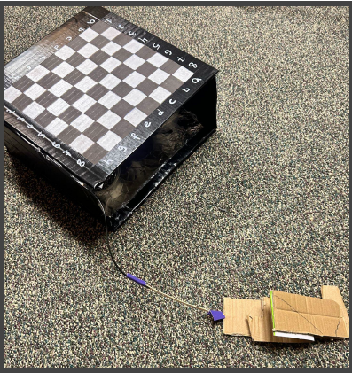

Project 05
Magnetic
Chessboard
We designed and prototyped a magnetically controlled chessboard that allows people with limited fine motor control to move pieces independently without relying on precise hand movements.

The context
The Accessibility Gap in
Chess
Chess should test strategy — not precise hand movements.
Traditional chess requires players to grasp, lift, and precisely position small pieces, creating a barrier for people with limited fine motor control. Our challenge was to preserve the familiar, social experience of playing on a physical chessboard while allowing users to make moves independently through accessible buttons or a foot pedal. The design also needed to balance portability, affordability, reliability, and electromagnetic safety.
The process
From Insight to
Prototype
We turned accessibility needs into a focused electromagnetic proof of concept.
We began by defining what users with limited fine motor control needed from a physical chessboard, then used engineering design methods to narrow the concept. We built and tested a single electromagnetic tile to determine whether it could move a chess piece safely and reliably.
Identified stakeholder needs and used benchmarking, QFD, SWOT analysis, and a morph chart to prioritize independence, simple controls, safety, affordability, and repairability.
Created a low fidelity prototype using a low power electromagnet, adjustable mu-metal shielding, wiring, a bench power supply, and a simple structural frame.
Used a P-diagram and controlled test protocol, increased current in small increments, measured chess-piece displacement, and recorded the results in Microsoft Excel.